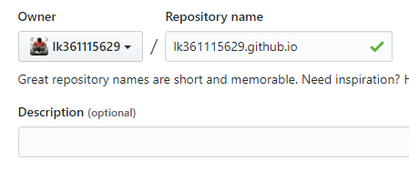

Hexo是一个用于构建Blog的web框架，使用Hexo可以方便地搭建自己的个人博客（并且可以使用Github作为服务器），搭建完成后只要编辑markdown文件就可以发布博客了。本站就是基于Hexo搭建的——https://lk361115629.github.io/
环境搭建
安装和配置Hexo
下载cnpm
若是windows，使用cmd终端或者PowerShell执行下述命令（or bash if linux）：1
$ npm install -g cnpm --registry=https://registry.npm.taobao.org
安装好后就可以使用国内npm镜像了，用cnpm命令代替npm，速度快一点。
下载Hexo
1 | $ cnpm install -g hexo-cli |
在本地创建一个存放Hexo工程文件的空目录，或者执行：1
$ mkdir Hexo
进入该目录，初始化Hexo：1
2
3$ cd Hexo
$ hexo init
$ cnpm install
注意看打印信息，是否执行成功。
然后Hexo目录下应该是这种结构：1
2$ ls
_config.yml db.json node_modules/ package.json scaffolds/ source/ themes/
从github克隆NexT主题
1 | $ git clone https://github.com/lk361115629/hexo-theme-next themes/next |
如果想使用原版NexT主题：1
$ git clone https://github.com/iissnan/hexo-theme-next themes/next
配置Hexo 根目录 的_config.yml文件中theme为next：1
theme: next
若希望网页为中文，则同时配置language：1
language: zh-Hans
开启hexo服务器
1 | $ hexo server |
可以看到如下信息：1
INFO Hexo is running at http://localhost:4000/. Press Ctrl+C to stop.
此时web已经在本地开始运行，然后打开浏览器输入：127.0.0.1:4000 就可以看到构建好的博客页面了。
到这里，hexo的安装和配置就完成了，如果你有云服务器，在服务器上运行hexo服务器即可。
配置github仓库
这里假定你已经有github账号并且能正常使用。
若没有，到github注册一个账号。
创建空仓库
创建一个空仓库，仓库名字为你的用户名.github.io，仓库名不能写错。
例如，创建我的仓库(用户名为lk361115629)：

添加deploy地址
打开Hexo目录下面的_config.yml，拉到最下面，修改deploy配置为：1
2
3
4deploy:
type: git
repository: https://github.com/你的用户名/你的用户名.github.io.git
branch: master
或者1
2
3
4deploy:
type: git
repository: git@github.com:你的用户名/你的用户名.github.io.git
branch: master
生成静态html文件并上传
进入Hexo目录，依次执行：1
2
3$ hexo clean
$ hexo g
$ hexo d
如果提示INFO Deploy done: git则表示部署成功了。
如果提示错误ERROR Deployer not found: git表示hexo的部署器没有安装，执行：1
$ cnpm install hexo-deployer-git --save
就可以解决了。
访问自己构建的博客
浏览器输入你的用户名.github.io就可以访问了。
创建和发布文章
创建和编辑文章
进入Hexo目录，执行：1
$ hexo new '文章标题'
然后在Hexo/source/_posts目录可以看到刚刚创建的后缀名为.md的文件，用markdown编辑器编辑这个文件就是编写博客了，markdown语法点我。
开启hexo服务器：1
$ hexo server
文章保存后在浏览器的127.0.0.1:4000可以看到发布文章的效果；
文章修改保存后直接刷新页面就可以看到效果了。
文章插入图片
在Hexo目录执行：1
$ cnpm install https://github.com/CodeFalling/hexo-asset-image --save
在source/_posts/创建与文章标题相同的目录，例如文章标题为hello：1
$ mkdir ./source/_posts/hello
然后把图片放到刚刚创建的目录下，比如a.png，在文章中插入：1

发布文章
发布文章的方法和上面部署博客的方法一样，在Hexo目录执行：1
2
3$ hexo clean
$ hexo g
$ hexo d
好了，最后把链接https://你的用户名.github.io发送给你心仪的的妹子就可以了 :)